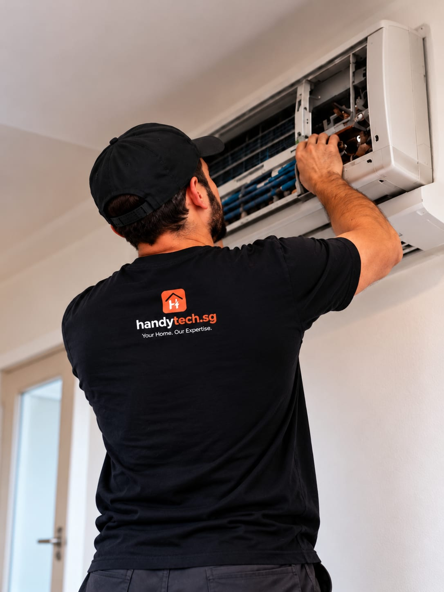

Aircon servicing for
cool, comfortable rooms.
Fast response for aircon issues, repairs, installations and maintenance — with safe, efficient and reliable workmanship for homes and businesses.

from servicing to installs
03
Comfort starts with understanding the setup.
Tell us what the unit is doing, where it is installed and what kind of support you are looking for. We will confirm the appropriate next step.
- What the unit is doing — noises, leaks, weak cooling — and its brand if known
- Where the indoor and outdoor units sit and whether they are reachable
- Your postal code so we can plan the visit
Servicing & cleaning
General servicing, fan-coil and filter cleaning, drain checks.
From $80Troubleshooting & repair
Not-cold issues, water leakage, unusual noise, fault diagnosis.
From $80Chemical wash & gas top-up
Chemical wash, pressure checking, cooling improvement.
From $180Piping & drainage
Drain pipes, insulation, discharge and leakage checks.
From $120Installation
Indoor and outdoor setup, replacements, piping, testing.
From $280Maintenance support
Inspections, performance checks and service planning.
From $80Straightforward
from the start.
Reply within 1 business hour
Send details by form, WhatsApp or phone. For urgent electrical faults, call first — any time.
Quote before work
You get a clear scope and price to agree on before anything starts. No surprises.
30-day cover
Our workmanship is covered for 30 days after handover. Just tell us if something seems off.
4 things people ask us most
How much does aircon servicing cost?
Servicing and cleaning starts from $80, troubleshooting and repairs from $80, chemical wash and gas top-up from $180, drainage work from $120, and installation from $280.
Is chemical wash or gas top-up really needed?
We check performance and pressures first and explain what is actually needed. If a simple clean will do, we will say so rather than recommend the bigger job.
Do you repair or install new units?
Both. We handle repairs, chemical washes, gas top-ups, and coordinate installations including indoor and outdoor unit setup and testing.
How often should an aircon be serviced?
Every 6 to 12 months is typical for regular use. We can set a maintenance plan so filters, coils and drains stay in good condition.